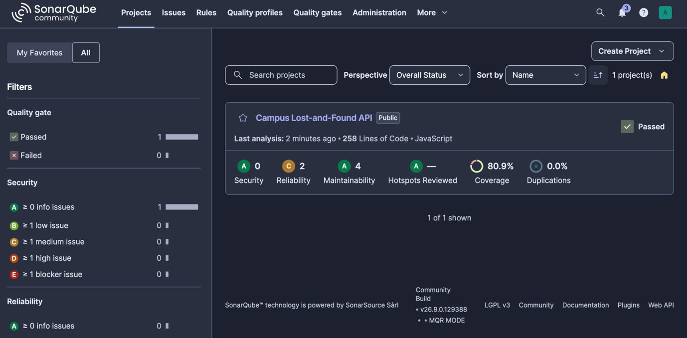
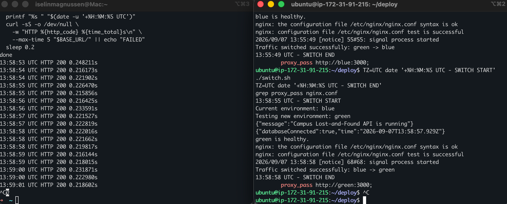

Application
- Node.js 22 and Fastify 5
- PostgreSQL full-text search with to_tsvector and plainto_tsquery
- Jest tests that simulate requests without a real server or database
- Config through environment variables, secrets in GitHub
Backend & DevOps · Soloprosjekt
A REST API for a university's lost-and-found service, with a full CI/CD pipeline that tests, scans, builds and deploys every release to AWS using blue/green deployment.
Build the backend for a campus lost-and-found service and practise DevOps: a cloud-hosted pipeline with at least five stages, code quality and security scanning, feature toggles, and blue/green deployment on AWS.
Creating, updating and deleting items needs a key. Keys are stored as SHA-256 hashes and can be rotated.
Anyone can list items with pagination, newest or oldest first, and PostgreSQL full-text search.
Full-text search can be switched off in PostHog and the running server follows straight away.
A new version is tested on the idle environment before NGINX moves traffic to it.
GitHub Actions. A push to main runs the first three stages; a push to deploy/production runs all of them.


